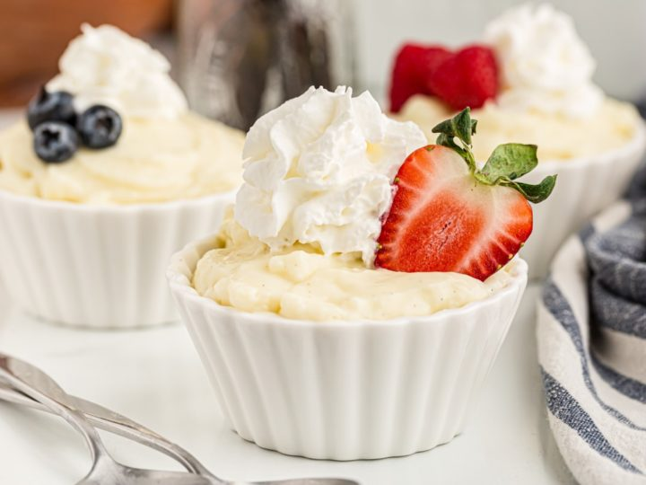

Vanilla pudding one of my favorite desserts, some people may think that its plain and basic but its undeniably delicious. Not only does this dessert taste amazing but it is also fairly easy to make. The recipe below will show you one easy way to make vanilla pudding at home with no hassle.
Image from The BakeorBreak Website
Recipe and Instructions by Jamie from The MyBakingAddiction Website